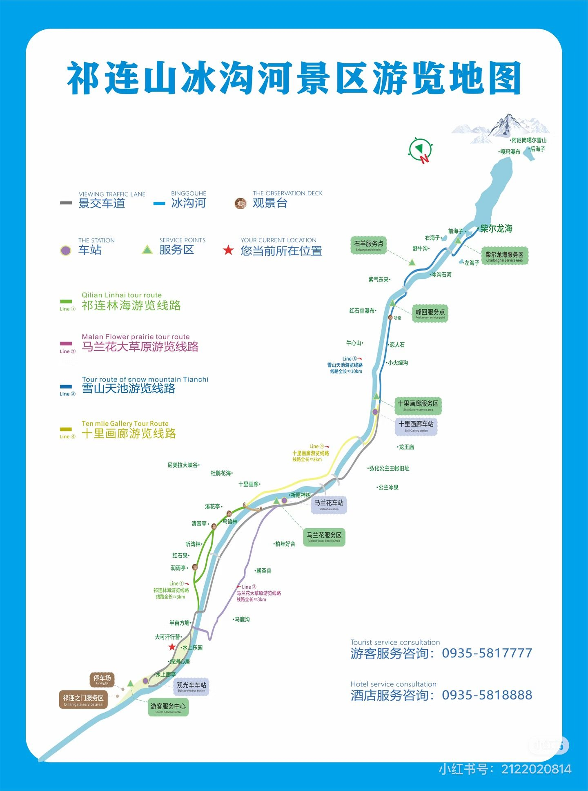

Wuwei · Qilian Mountains
冰沟河景区
冰沟河位于祁连山东端，由高山草甸、河谷峡谷、云杉林、雪山视野与高海拔湖泊构成。经典线和柴尔龙海／天池线从同一景区进入，但体验完全不同：经典线侧重峡谷、森林与草原的连续变化，天池线则是长距离、高海拔徒步。9 月下旬低处常见黄绿相间的秋色，高处可能已经积雪或结冰，最终选择必须服从当天开放、天气和身体状态。

经典线｜峡谷、森林与草原
- 乘景交车进入，先看马兰花草原的开阔尺度。
- 在尼美拉峡谷观察河谷、岩壁与植被变化。
- 把主要步行时间留给祁连林海、半亩方塘等自然区域。
- 大汗营地、水亭和冰沟老街作为返程休息点，商业体验靠后取舍。
体力中等、节奏从容，遇到积雪或睡眠不足时优先选择这一线。
天池线｜柴尔龙海挑战
- 约 3km：丰会服务点，第一次判断身体状态。
- 约 6km：石羊服务点，补水、进食并再次评估。
- 约 9km：柴海服务点，距湖约 1km。
- 约 10km：柴尔龙海；到湖后短暂停留，按计划及时折返。
往返通常需 6—8 小时，体力要求高；服务点名称、里程和开放情况以现场为准。
怎么选
想看广东、云南日常少见的祁连山秋色，又希望稳定完成行程，经典线更合适。只有在预约有效、路线开放、前夜休息尚可、没有明显心悸或高反、积雪路面可控时，才尝试天池线；途中随时可以转为下撤。
看景与摄影
经典线重点拍草甸—针叶林—峡谷的层次变化；广角表现空间，中长焦截取雪山与林带。天池线不要为了拍照延误折返，低温下手机和相机电量会下降，备用电源贴身保暖。
穿着与食水
两条线都穿速干层、抓绒或薄羽绒、防风防水外层和防滑徒步鞋。天池线每人至少准备 1.5—2L 水、电解质饮料、午餐、能量食物、保暖帽、手套、雨衣、头灯、干袜和充电宝。
立即下撤信号
头痛持续加重、恶心眩晕、步态不稳、异常乏力、胸闷或静止时仍明显气喘，都应立即停止上升。便携氧气不能作为继续爬升的理由；身体不适者不要独自下撤。